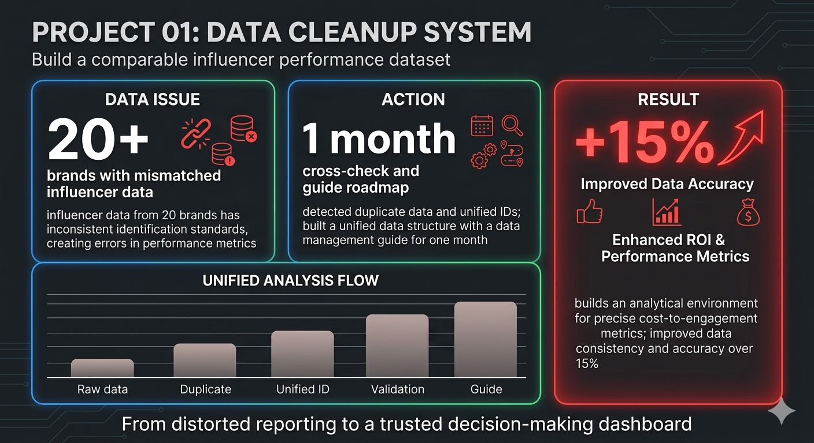
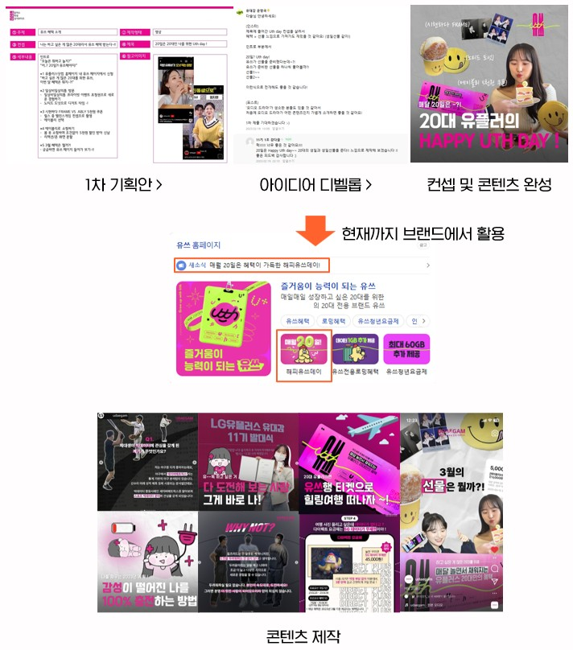
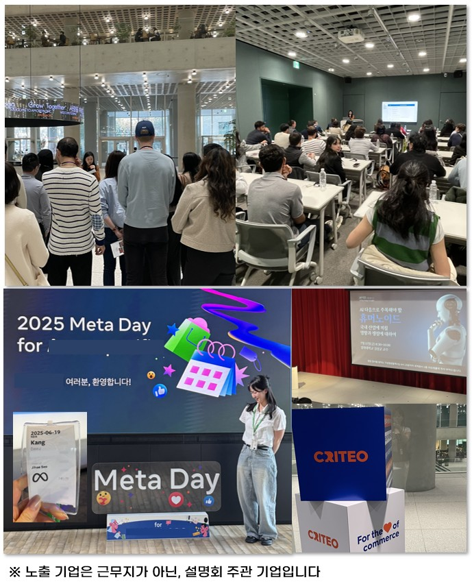

DATA
20+ Brands Analyzed 전사 브랜드 데이터를 취합 분석하여 성과 비교 및 의사결정 기준을 구축한 경험2026 LOTTE DEPARTMENT STORE MARKETING PORTFOLIO
MAKE MY NEXT [ Insight ]
특정 고객의 반응을 바꾸기 위해 문제를 정의하고, 근거를 모아 전략과 실행으로 연결해온 마케터 강다슬입니다.
STRATEGY
Data-Driven Marketing Strategy 데이터 기반 인사이트를 바탕으로 콘텐츠 및 인플루언서 전략을 설계하고 실행 방향 도출AI NATIVE
AI-Driven Marketing Workflow AI를 활용해 데이터 분석과 콘텐츠 기획을 고도화하고 인사이트 도출 및 업무 효율을 개선FIT FOR LOTTE DEPARTMENT STORE MARKETING
JD 기반 4가지 핵심 역량
직무 역량을 갖추기 위해, 데이터를 기반으로 고객과 시장을 해석하고 이를 실행 전략으로 연결하는 경험을 쌓았습니다.
전략적 사고 및 기획력
광고대행사 경쟁 PT에서 사업·시장·고객 데이터를 분석해 전략 의사결정 구조를 설계했습니다.
- 반도체 산업 데이터를 구조화해 인사이트 중심 ‘팩트북’ 제작
- FGI를 통해 정성 데이터를 보완하고 인사이트 고도화
- 도출한 인사이트를 기반으로 전략 방향이 실제 제안안에 반영
데이터 기반 분석력
데이터를 단순 정리하는 수준을 넘어, 성과를 설명하고 의사결정으로 전환하는 분석 역량을 키웠습니다.
- 월 300건 이상의 SNS 콘텐츠 데이터를 통합·정리 및 시각화
- CPC·CPV·전환율을 기반으로 성과 구조를 분석
- 광고비·성과 데이터를 결합해 효율 판단 기준 수립
- 분석 결과를 바탕으로 콘텐츠 및 인플루언서 전략 개선 방향 도출
콘텐츠 기획 및 브랜딩 역량
브랜드의 핵심 메시지를 정의하고, 고객 반응을 유도하는 방식으로 채널별 콘텐츠를 설계했습니다.
- 영브랜드 런칭 홍보 미션에서 USP 기반 브랜드 컨셉 및 카피 기획
- 해당 메시지가 실제 브랜드 자산 및 콘텐츠 방향으로 활용
- 릴스, 카드뉴스, 블로그 등 채널별로 메시지를 재구성하여 타겟 고객 반응을 고려한 콘텐츠 설계 경험
프로젝트 실행 및 협업 역량
다양한 이해관계자 사이에서 프로젝트를 실행하며, 계획이 흔들리지 않도록 운영 구조를 설계하고 관리했습니다.
- FGI 기획 및 운영 과정에서 인플루언서 7명 섭외 및 일정 조율
- 전사 20여 개 브랜드 데이터를 5개월간 누락 없이 관리·취합
- 기업 홍보 협업 프로젝트에서 팀장을 맡아 기획–실행–피드백까지 주도하며 최우수활동팀 선정
SELECTED PROJECTS
마케팅 프로젝트 경험
아래 프로젝트는 STAR 기법을 기반으로 문제를 정의하고 근거로 전략을 설계한 과정을 담고 있습니다. 특히 각 프로젝트 끝에는 이러한 경험이 롯데백화점의 비즈니스 현장에서 어떤 기여점으로 이어질 수 있는지 구체적으로 기술했습니다.

데이터 기반 인플루언서 마케팅 효율 개선 프로젝트
문제 정의 (Situation)
20여 개 브랜드의 SNS 데이터에서 인플루언서 식별 기준이 불일치하여 성과 지표 오류 및 잘못된 의사결정 가능성 존재
접근 (Task)
데이터 정합성을 확보하고 브랜드 간 비교 가능한 분석 기준을 구축하는 것을 목표로 설정
실행 (Action)
- 피벗테이블 및 필터 기능을 활용해 중복 데이터 탐지 및 구조 재정의
- 동일 인플루언서를 통합하는 데이터 기준 필드 설계
- 1개월간 샘플·기존 데이터 교차 검증을 통해 정합성 확보
- 팀 내 데이터 관리 가이드 제작 및 배포
성과 (Result)
- 비용 대비 인게이지먼트 지표를 정확히 도출할 수 있는 분석 환경 구축
- 데이터 기반 의사결정 신뢰도 확보
- 업무 정합성 약 15% 개선
이를 바탕으로 롯데백화점에서도 고객 및 프로모션 데이터를 구조화하여, 디지털 채널 마케팅 성과를 비교·분석하고 의사결정의 정확도를 높이는 데 기여하겠습니다.

반도체 산업 분석 기반 광고 전략 인사이트 도출 프로젝트 (팩트북 제작)
문제 정의 (Situation)
반도체 산업의 복잡한 공정·시장 구조로 인해 광고 전략 수립 시 핵심 메시지와 방향 설정이 어려운 상황
접근 (Task)
사업·시장·경쟁사·고객 데이터를 통합 분석하여 전략 수립에 활용 가능한 인사이트 구조 구축을 목표로 설정
실행 (Action)
- 반도체 제품 포트폴리오, 공정 과정, IT·AI 산업 동향을 분석
- 핵심 내용을 ‘팩트북’ 형태로 구조화하여 인사이트 도출
- 팀 브리핑 및 협력부서 전달을 통해 전략 방향 공유
- 데스크 리서치 한계를 보완하기 위해 전공생 대상 FGI 수행
성과 (Result)
- 산업 및 고객 이해 기반의 전략 인사이트 도출
- 도출된 인사이트가 실제 광고 기획 방향 설정에 반영
- 데이터와 현장 의견을 결합한 실행 가능한 전략 설계 경험 확보
롯데백화점에서도 시장·고객·브랜드 데이터를 기반으로 인사이트를 도출하고, 이를 마케팅 전략 및 프로모션 기획에 반영하는 역할을 수행하겠습니다.

타겟 맞춤 인플루언서 마케팅 및 SNS 프로모션 운영 프로젝트
문제 정의 (Situation)
뷰티 인플루언서 한정 시딩으로 인플루언서 및 콘텐츠 전략의 효율성이 제한적인 상황
접근 (Task)
제품 USP와 타겟 고객을 기반으로 인플루언서 선정부터 콘텐츠, 프로모션까지 일관된 전략 구조 설계
실행 (Action)
- 제품별 타겟에 맞는 인플루언서 선정 및 시딩 전략 운영
- USP 기반 콘텐츠 가이드라인 제작 및 인플루언서 협업 관리
- 콘텐츠 업로드, 광고법 준수, 노출 성과 등 전 과정 모니터링
- 공식 SNS 채널 신제품 런칭 이벤트 기획 및 운영
- 디자인팀과 협업하여 콘텐츠 제작 및 캠페인 실행
성과 (Result)
- 제품별 타겟 인플루언서 전략으로 신규 소비자 접점 확보 및 네이버 검색량 증가
- SNS 이벤트 운영을 통해 인게이지먼트 42.6% 향상
- 기획–섭외–운영–성과분석까지 전 과정 관리 역량 확보
이 경험을 바탕으로 롯데백화점에서도 브랜드 및 카테고리별 특성에 맞는 프로모션을 기획·운영하고, 성과 데이터를 기반으로 지속적인 개선을 이끌겠습니다.

20대 타겟 브랜드 홍보 프로젝트
문제 정의 (Situation)
20대를 타겟으로 한 신규 브랜드가 낮은 인지도와 함께 타겟에게 직관적으로 인식되는 메시지가 부족한 상황
접근 (Task)
20대의 소비 패턴과 콘텐츠 소비 방식을 고려하여 타겟 고객에게 자연스럽게 각인될 수 있는 브랜드 경험 설계
실행 (Action)
- 20대 타겟의 콘텐츠 트렌드 및 행동 패턴 분석
- 서비스 USP(매월 20일 혜택)를 기반으로 ‘20일=OO데이’ → ‘생일처럼 선물 받는 경험’으로 재해석
- ‘해피OO데이’ 컨셉을 통해 브랜드 메시지를 일관된 경험 구조로 설계
- 인스타그램 릴스 트렌드를 반영한 콘텐츠 제작 및 실행
성과 (Result)
- 콘텐츠 조회수 약 1.6천 회 달성 및 월 우수활동자 선정
- 제안한 컨셉이 현재까지 브랜드 자산으로 지속 활용
- 타겟 고객에게 브랜드를 ‘기념일’로 인식시키는 경험 설계 성과 확보
이를 통해 롯데백화점에서도 고객 세그먼트별 특성을 반영한 타겟 마케팅을 설계하고, 고객의 반복 방문과 로열티를 강화하는 경험을 만들어내겠습니다.

OSMU 기반 디지털 콘텐츠 확산 및 참여율 개선 프로젝트
문제 정의 (Situation)
초기 롱폼 콘텐츠와 이벤트의 참여율이 낮고 타겟 고객 도달 범위가 제한적인 상황
접근 (Task)
콘텐츠 도달률을 확대하고 참여를 유도하기 위해 채널별 특성을 반영한 OSMU 전략 설계
실행 (Action)
- 숏폼, 카드뉴스, 블로그 등 채널별 콘텐츠 병행 운영
- 콘텐츠와 참여형 이벤트를 결합하여 고객 접점 확대
- 페르소나 SNS 계정 운영을 통해 약 1천 명 타겟 팔로워 확보
- 채널별 반응을 기반으로 콘텐츠 방향 지속 개선
성과 (Result)
- 콘텐츠 조회수 약 1.4천 회, 이벤트 참여자 97명 달성
- 참여율 30% 이상 개선
- 채널 확장을 통한 브랜드 인지도 및 고객 참여도 상승
- 최우수활동팀 선정
이 경험을 바탕으로 롯데백화점의 다양한 디지털 채널을 통합적으로 운영하며, 채널별 특성에 맞는 콘텐츠 전략을 통해 고객 도달과 참여를 동시에 확대하겠습니다.

글로벌 고객 경험 설계를 위한 트렌드 기반 프로그램 운영 프로젝트
상황 (Situation)
해외 참가자를 대상으로 브랜드를 소개하는 프로그램에서 국가별 소비 문화와 트렌드 차이를 고려한 전달 방식이 필요한 상황
목표 (Task)
글로벌 소비자의 관점에서 브랜드 메시지를 해석하여 브랜드 경험을 효과적으로 전달하는 운영 방식 설계
실행 (Action)
- 아마존·세포라 리뷰 분석을 통해 국가별 소비자 니즈 및 차이 분석
- 글로벌 뷰티 트렌드 및 미주 마케팅 사례 학습
- 사옥 투어 및 Q&A 과정에서 브랜드 메시지를 고객 관점으로 재구성
- 약 40명의 해외 참가자를 대상으로 영어 커뮤니케이션 기반 프로그램 운영
성과 (Result)
- 글로벌 고객 관점에서 브랜드 가치를 전달하는 경험 설계 역량 확보
- 참가자의 질문을 사전에 예측하고 대응 가능한 운영 역량 강화
- 프로그램의 지속 운영 및 브랜드 인지도 확산 기여
이 경험을 통해 롯데백화점의 외국인 고객 대상 마케팅에서도 국가별 소비 특성과 문화적 차이를 반영한 맞춤형 고객 경험을 설계하고, 글로벌 고객 유입과 만족도 향상에 기여하겠습니다.
READY FOR LOTTE
[L-Insight Tracker] 데이터로 설계하는 롯데백화점의 NEXT
바이브코딩(AI 기반 개발)을 활용해 "데이터 속에서 롯데백화점의 다음(Next)을 발굴하는 실시간 트렌드 추적 시스템"을 직접 구현했습니다.
롯데(L)의 비즈니스 관점에서 인사이트(Insight)를 끈질기게 추적(Tracker)하고,
이 구조를 점포별 CRM 데이터와 결합해 더 정교한 전략 제안 도구로 발전시키고 싶습니다.
L-Insight Tracker
검색 트렌드 데이터를 단순 요약하지 않고, 시즌 이슈와 카테고리 반응 흐름을 읽어 실행 가능한 마케팅 제안으로 연결하는 방식의 데이터 기반 전략 웹페이지입니다.
- 네이버 데이터랩 API 기반 검색량 트렌드 수집 및 시각화
- 카테고리별 관심도 변화와 시즌 반응을 리포트 구조로 정리
- 리포트 결과를 실제 마케팅 전략 제안 문장으로 전환
- 향후 점포 CRM 및 상권 데이터와 결합 가능한 전략 도구로 확장 목표
MAKE MY NEXT [VALUE]